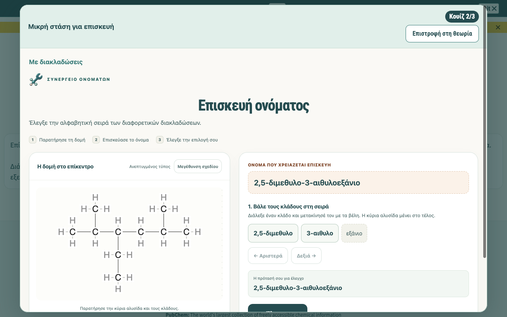
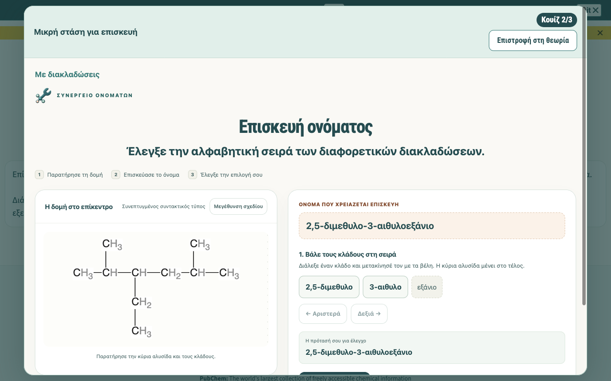
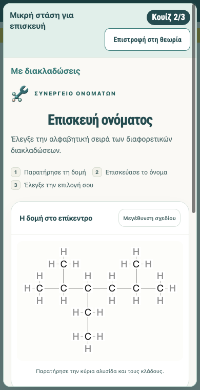
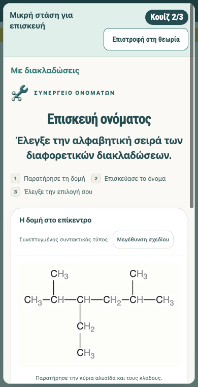
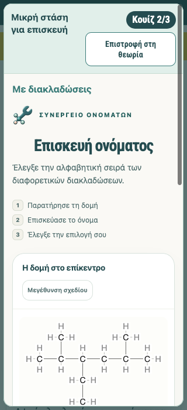
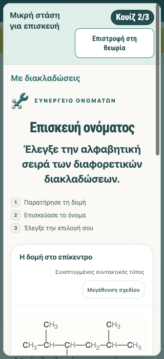

Actual isolated headless Firefox screenshots, 10 November 2026. Before uses an exact frozen four-file baseline overlay; after uses the frozen six-file approved result. Both runs earned all six repairs through native pointer input. Developer evidence, not independent review.






The canonical objective is unchanged. Computed presentation: 24px desktop / 20px narrow, bold, centered. The current large branched molecule uses its existing Main55 condensed viewer drawing, ten CHn groups and nine C-C bonds, without numbering or highlights. Smaller molecules retain their expanded drawings.
Final replay: 113 checks, six earned repairs, both required gates, real refresh with earned and unsubmitted progress, response scrolling, same main/zoom asset and alt, replay and Exit, bounded default standalone check. No JavaScript errors recorded in these scoped runs. No publication, physical mobile/Safari/offline testing or uninterrupted conference reliability certification.
Before results | After results | Refresh comparison diagnosis | Real baseline-earned receipt compatibility